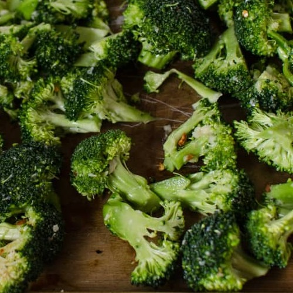

Garlicky Roasted Veggies
Description
A veggie of your choice oven-roasted with red pepper flakes and garlic. Broccoli or brussels sprouts are my favorite.
Ingredients
- 1 pound - Veggie of your choice (broccoli/brussels sprouts)
- 1/4 cup - Olive Oil
- 6 - Garlic Cloves, Minced
- 1 tsp Salt
- 1 tsp Red Pepper Flakes
Directions
- Heat oven to 450°F
- Cut the broccoli into bite-sized florets. Cut the stems into diagonal bite-sized pieces.
Cut butts off of Brussels Sprouts and in half long ways. - Add oil, garlic, red pepper flakes and salt into a large bowl. Stir to mix well.
- Add veggies to bowl and toss to coat.
- Roast until the veggies are tender and the edges are singed, 12 to 15 minutes.
- If you desire an extra measure of smokiness, switch the oven to broil,
move the baking sheet up to the highest rack. Broil for 1 to 2 minutes.